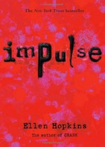
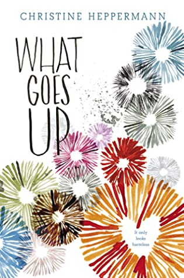
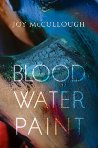

- Home
- Browse
poetry Stories
Read the stories we love
Clap When You Landby Elizabeth Acevedo
Ratings
Camino Rios lives for the summers when her father visits her in the Dominican Republic. But this time, on the day when his plane is supposed to land, Camino arrives at the airport to see crowds of crying people… In New York City, Yahaira Rios is called to the principal’s office, where her mother is waiting to tell her that her father, her hero, has died in a plane crash.The Black Flamingoby Dean Atta
Ratings
Michael is a mixed-race gay teen growing up in London. All his life, he’s navigated what it means to be Greek-Cypriot and Jamaican—but never quite feeling Greek or Black enough. As he gets older, Michael’s coming out is only the start of learning who he is and where he fits in. When he discovers the Drag Society, he finally finds where he belongs—and the Black Flamingo is born. What Goes Upby Christine Heppermann
Ratings
When Jorie wakes up in the loft bed of a college boy she doesn’t recognize, she’s instantly filled with regret. What happened the night before? What led her to this place? Was it her father’s infidelity? Her mother’s seemingly weak acceptance? Her recent breakup with Ian, the boy who loved her art and supported her through the hardest time of her life?The Poet Xby Elizabeth Acevedo
Ratings
As Jorie tries to reconstruct the events that led her to this point, free verse poems lead the reader through the current morning, as well as flashbacks to her relationships with her parents, her friends, her boyfriend, and the previous nightSaving Redby Sonya Sones
Ratings
Right before winter break, fourteen-year-old Molly Rosenberg reluctantly volunteers to participate in Santa Monica’s annual homeless count, just to get her school’s community service requirement out of the way. But when she ends up meeting Red, a spirited homeless girl only a few years older than she is, Molly makes it her mission to reunite her with her family in time for ChristmasOne by
by Sarah Crossan
Ratings
Tippi and Grace. Grace and Tippi. For them, it’s normal to step into the same skirt. To hook their arms around each other for balance. To fall asleep listening to the other breathing. To share. And to keep some things private. Each of the sixteen-year-old girls has her own head, heart, and two arms, but at the belly, they join. And they are happy, never wanting to risk the dangerous separation surgery.Soldby Patricia McCormick
Ratings
Lakshmi’s life becomes a nightmare from which she cannot escape. Still, she lives by her mother’s words—“Simply to endure is to triumph.” Then the day comes when she must make a decision. Will she risk everything for a chance to reclaim her life?White Roseby Kip Wilson
Ratings
A gorgeous and timely novel based on the incredible story of Sophie Scholl, a young German college student who challenged the Nazi regime during World War II as part of The White Rose, a non-violent resistance group. Blood Water Paintby Joy McCullough
Ratings
Her mother died when she was twelve, and suddenly Artemisia Gentileschi had a stark choice: a life as a nun in a convent or a life grinding pigment for her father’s paint. She chose paint.Light Filters Inby Caroline Kaufman
Ratings
In Light Filters In, Caroline Kaufman—known as @poeticpoison—does what she does best: reflects our own experiences back at us and makes us feel less alone, one exquisite and insightful piece at a time. She writes about giving up too much of yourself to someone else, not fitting in, endlessly Googling “how to be happy,” and ultimately figuring out who you are.